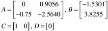
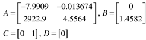
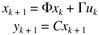

Student Exercises
| 1: | Reproduce the DMC simulations for the van de Vusse reactor shown in Figures 16-9 and 16-10 using the files shown in Appendix 16.3 (also, you may download these files from the book web page). | | 2: | Run the DMC simulations for the van de Vusse reactor, for a prediction horizon of 10 (and a model length of 50). Vary the control horizon and discuss the effect; for example, if M = 5, the manipulated input resembles a "pulse" change. Also, try different weighting on the manipulated input and discuss the effect. | | 3: | Consider a biochemical reactor operated at a stable operating condition (Module 7), with the state space model

where the input is the dilution rate (units = min-1) and the output is the biomass concentration (gmol/L). Modify the DMC simulation code presented in Appendix 16.3 to simulate the MPC applied to this system. Use a sample time of 0.05 hours and discuss the effect of model length, prediction horizon, and control horizon on the performance for setpoint changes of 0.02 gmol/L. Consider the effect of these parameters on the magnitude of manipulated input changes. What are your recommended tuning parameters if the maximum manipulated input change is 0.2 min-1? | | 4: | Consider a jacketed chemical reactor, where jacket temperature is the manipulated input and reactor temperature is the measured output. For the 100 ft3 propylene glycol reactor presented in Module 8, the state space model is

Modify the DMC simulation code presented in Appendix 16.3 to simulate MPC applied to this system. Use a sample time of 0.05 hours and discuss the effect of model length, prediction horizon, and control horizon (remember that N > P > M) on the performance for setpoint changes of 5°F. Consider the effect of the tuning parameters on the manipulated input changes (that is, is the change in jacket temperature reasonable?). | | 5: | Consider a discrete state space model with the following form

Assume that the state vector is perfectly known at the current time step (k), the model is perfect, and there are no disturbances. Predict the output up to P time steps in the future, based on M current and future control moves (Duk, ..., Duk+M-1). Realize that uk = uk-1 + Duk, etc. Show how the output prediction is naturally composed of free and forced response contributions. |
|